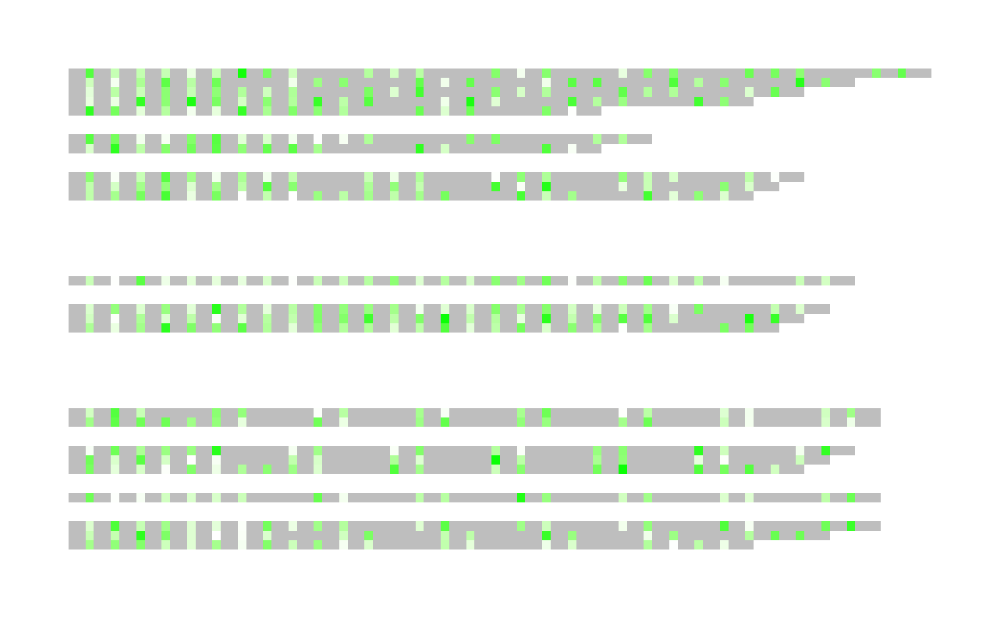
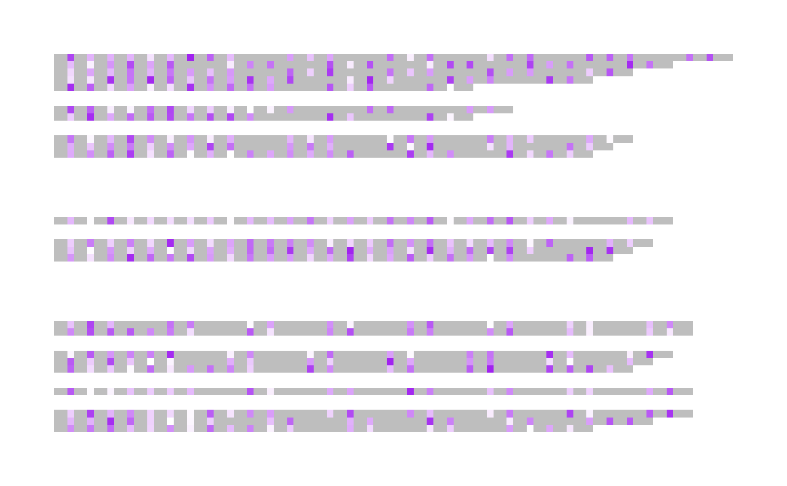
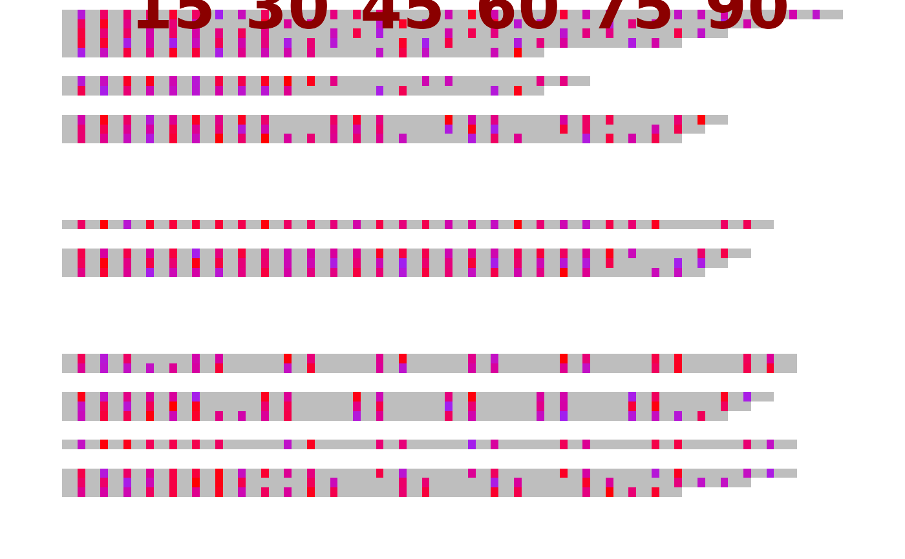

As of v1.0.0, ggDNAvis supports function and argument aliases.
The code is entirely written with British spellings (e.g. visualise_methylation_colour_scale()),
but should also accept American spellings (e.g. visualize_methylation_color_scale()).
If any American spellings don't work, I most likely overlooked them and can easily fix,
so please submit a bug report by creating a github issue
(https://github.com/ejade42/ggDNAvis/issues).
All four major visualise_ functions have aliases to also accept visualize_:
As of v1.0.0, extract_methylation_from_dataframe() has been renamed extract_and_sort_methylation()
for consistency with extract_and_sort_sequences(). To preserve compatibility and ensure consistency,
both functions now accept either name formulation:
extract_and_sort_sequences()(extract_sequences_from_dataframe())extract_and_sort_methylation()(extract_methylation_from_dataframe())
The builtin dataset sequence_colour_palettes, like all colour arguments, also accepts
color or col:
The interactive shinyapp can be called via ggDNAvis_shinyapp() or ggDNAvis_shiny().
Additionally, the three rasterise_ helper functions also accept rasterize_:
All arguments should have aliases configured. In particular, any _colour arguments
should also accept _color or _col.
When more than one equivalent argument is provided, the 'canonical' (British) argument
takes precedence, and will produce a warning message explaining this. For colours, _colour
takes precedence over _color, which itself takes precedence over _col.
I have also tried to provide aliases for common argument misspellings. In particular,
index_annotation_full_line also accepts any of index_annotations_full_lines,
index_annotation_full_lines, or index_annotations_full_line.
Likewise, index_annotations_above also accepts index_annotation_above.
Examples
d <- extract_methylation_from_dataframe(example_many_sequences)
## The resulting low colour will be green
visualise_methylation(
d$locations,
d$probabilities,
d$sequences,
index_annotation_lines = NA,
outline_linewidth = 0,
high_colour = "white",
low_colour = "green",
low_color = "orange",
low_col = "purple"
)
#> Warning: Both 'low_colour' and alias 'low_color' were provided.
#> 'low_color' will be discarded.
#> Value: orange
#> 'low_colour' will be used.
#> Value: green
#> Warning: Both 'low_colour' and alias 'low_col' were provided.
#> 'low_col' will be discarded.
#> Value: purple
#> 'low_colour' will be used.
#> Value: green
#> ℹ Automatically using geom_raster (much faster than geom_tile) as no sequence text, index annotations, or outlines are present.
#> Warning: When using geom_raster, it is recommended to use a smaller pixels_per_base e.g. 10, as there is no text/outlines that would benefit from higher resolution.
#> Current value: 100

## The resulting low colour will be orange
visualise_methylation(
d$locations,
d$probabilities,
d$sequences,
index_annotation_lines = NA,
outline_linewidth = 0,
high_colour = "white",
low_color = "orange",
low_col = "purple"
)
#> Warning: Both 'low_colour' and alias 'low_col' were provided.
#> 'low_col' will be discarded.
#> Value: purple
#> 'low_colour' will be used.
#> Value: orange
#> ℹ Automatically using geom_raster (much faster than geom_tile) as no sequence text, index annotations, or outlines are present.
#> Warning: When using geom_raster, it is recommended to use a smaller pixels_per_base e.g. 10, as there is no text/outlines that would benefit from higher resolution.
#> Current value: 100

## The resulting low colour will be purple
visualise_methylation(
d$locations,
d$probabilities,
d$sequences,
index_annotation_lines = NA,
outline_linewidth = 0,
high_colour = "white",
low_col = "purple"
)
#> ℹ Automatically using geom_raster (much faster than geom_tile) as no sequence text, index annotations, or outlines are present.
#> Warning: When using geom_raster, it is recommended to use a smaller pixels_per_base e.g. 10, as there is no text/outlines that would benefit from higher resolution.
#> Current value: 100
